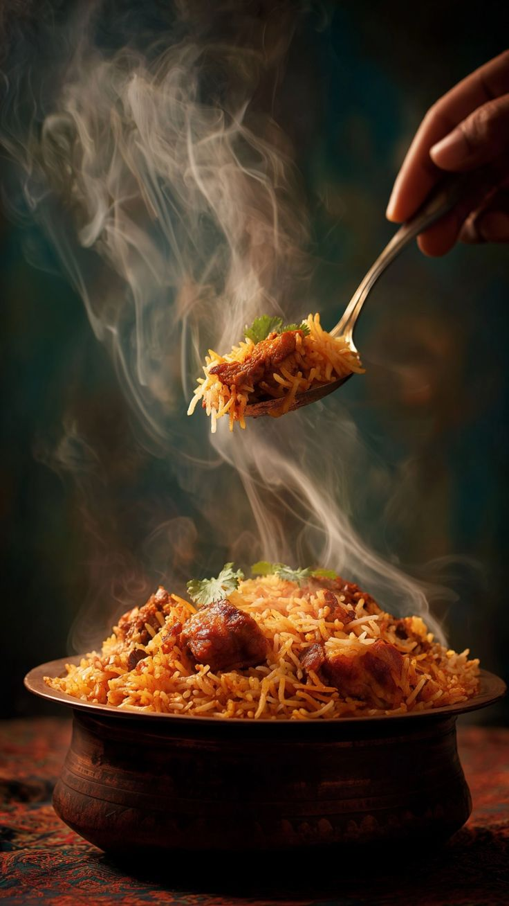

Home
Biryani

Description
Biryani is a mixed rice dish popular in South Asia, made with spices, rice, and meat.
Ingredients
- Basmati Rice
- Chicken/Mutton
- Yogurt
- Biryani Masala
Steps
- Marinate the meat with yogurt and spices.
- Boil the rice until 70% cooked.
- Layer the meat and rice in a pot.
- Cook on low heat (Dum) for 20 minutes.